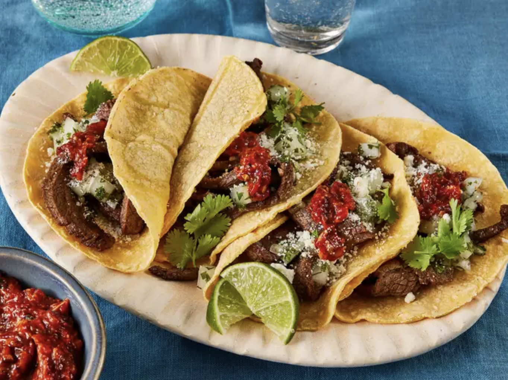

Home
Taqueria-Style Tacos - Carne Asada

These carne asada tacos made with tender strips of flank steak, served on soft corn tortillas are as good as you get at a taqueria. So delicious topped with onion relish and homemade tomato salsa!
Ingredients
- 3 pounds flank steak
- ½ cup soy sauce
- ½ cup olive oil
- ⅓ cup white vinegar
- 4 cloves garlic, minced
- 2 limes, juiced
- 1 teaspoon salt
- 1 teaspoon ground black pepper
- 1 teaspoon ground white pepper
- 1 teaspoon garlic powder
- 1 teaspoon chili powder
- 1 teaspoon dried oregano
- 1 teaspoon ground cumin
- 1 teaspoon paprika
- Corn tortillas
Steps
- Lay flank steak in a large glass baking dish.
- Make the marinade: Whisk soy sauce, oil, vinegar, 4 cloves of garlic, juice of two limes, salt, black pepper, white pepper, garlic powder, chili powder, oregano, cumin, and paprika together in a bowl until well blended; pour over steak, turning to coat both sides. Cover the dish with plastic wrap and marinate in the refrigerator for 1 to 8 hours.
- Remove steak from the marinade and shake off excess. Discard the remaining marinade. Cut the marinated flank steak into cubes or strips. Heat vegetable oil in a large skillet over medium-high heat. Add steak; cook and stir until cooked through and most of the liquid has evaporated.
- Warm tortillas in a dry skillet over low heat for about a minute on each side.
- Place some steak on each tortilla; top with relish and prepared salsa. Sprinkle with cotija cheese. Garnish with lime wedges and serve.